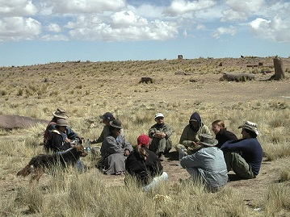

In the nineteenth century, American anthropology was organized into the four subfields we still know today—sociocultural anthropology, archaeology, physical/biological anthropology, and linguistic anthropology—in contrast to Europe’s focus on sociocultural anthropology. American anthropology strives to be holistic, a legacy championed by Franz Boas and his student Alfred Kroeber, who once described four-field anthropology as a “sacred bundle.” Over the decades, American anthropologists have fought hard to defend this four-field legacy, and as a result dozens of American universities have anthropology departments with each subfield represented, including UVM Anthropology.
Some anthropologists have called for “unwrapping the sacred bundle,” arguing that ultimately anthropologists usually specialize in a one subfield. Yet, this view is short-sighted and, at the undergraduate level, emphasis on a four-field education provides a valuable perspective in producing professionals who can employ the unique, holistic lens that well-grounded anthropologists have. Further:
